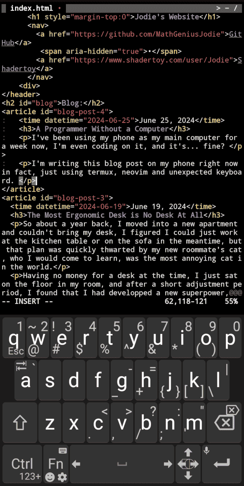

My Meditation Method
No matter how wise I feel, staring at a wall always gives me new insights, and it doesn't take long either, I like to take off my glasses so the wall is blurry, and wearing headphones with white noise too.
I try to think about nothing, but thoughts always come up, and when they do, I write them down in my notebook.
Trying to think about nothing makes you really analyse all your thoughts non-judgementally and forces you to reframe them in a way that they stop bothering you, because if they still bother you. good luck thinking about nothing.
Writing down your thoughts is also important, it frees your mind from having to remember, and you can always come back to them later.
I'm starting to think that the key to creativity and introspection is just being extremely bored and understimulated, ideas always come.
A Programmer Without a Computer
I've been using my phone as my main computer for a week now, I'm even coding on it, and it's... fine?
I'm writing this blog post on my phone right now in fact. Just using termux, neovim and unexpected keyboard.

I might get a foldable phone and/or a physical keyboard in the future, but honestly I'm not in a rush.
The Most Ergonomic Desk is No Desk At All
So about a year back, I moved into a new apartment and couldn't bring my desk, I figured I could just work at the kitchen table or on the sofa in the meantime, but that plan was quickly thwarted by my new roommate's cat, who I would come to learn, was the most annoying cat in the world.
Having no money for a desk at the time, I just sat on the floor in my room, and after a short adjustment period, I found that I had developped a new superpower, I could simply sit on the floor with no back support, and it was fine, in fact it was better than fine, it was better than sitting on a chair.
After a few months of this, I decided to buy a desk, and I found that I couldn't sit at it for more than a few hours without my back hurting, so I went back to sitting on the floor, and later donated the desk.
I haven't bought any furniture since, and I don't plan to, people didn't have furniture for most of human history, and many people in the third world still don't, this isn't as weird as it sounds.
Get Off Your Phone
Do you feel like you don't have any time? Do you feel like you don't have any energy? The culprit might just be that you spend 8 hours or more a day on your phone. Go ahead, check your screen time in your phone settings right now...
A rude awakening
When I first did this, I was shocked, I had absolutely no idea, I would have guessed 2 hours a day maximum if you asked me to estimate, but the software doesn't lie, I was spending 8 hours a day on average on my phone. That's a full-time job!
What you can do
Here's what worked for me and allowed me to cut my screen time down to 1-2 hours a day:
- Share a screenshot of your screen time to a group chat of your friends every day or week, to keep yourself accountable
- Remove anything that you can doomscroll off your homescreen, in fact, consider removing the app entirely.
- Add a screen time widget to your homescreen, this will remind you how much time you've spent on your phone today.
- Apps like Instagram allow you to make widgets to take you directly to messages
- Instead of checking apps constantly for new messages, turn on silent notifications, your phone won't vibrate, but you'll know if there's activity without having to open the app
- Consider making more of your notifications silent
- Don't check your phone in the morning, get up and work or do your morning routine right away
- Embrace boredom, don't reach for your phone when you're bored, think, meditate, smell the flowers, etc.
Should I Buy the Thing? A Flowchart
Am I happy? - Yes: You don't need the thing to be happy, don't buy the thing.
\ No: Will the thing make me happy? - Yes: Buy the thing.
\ No: Don't buy the thing
Bit Arrays for Fast Graph Search
One problem with every implementation of the HNSW paper I've seen is the use of ordered sets to keep track of visited neighbors, this causes a huge performance overhead.
After much experimentation, I've found that using a bit array to keep track of visited neighbors is much faster.
For a code example, see Joann, my HNSW implementation.